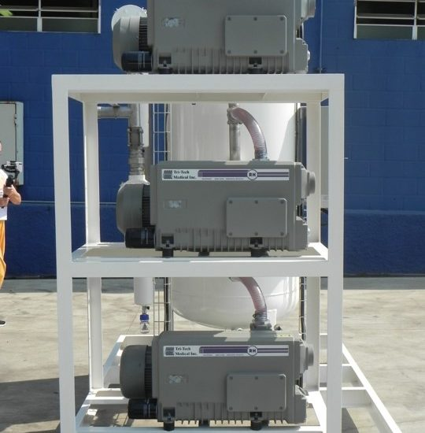

Filtros para Gases Medicinales
Protección avanzada para sistemas de gases medicinales

Filtro de Línea para Gases Medicinales
Filtro de línea grado médico para protección de sistemas de gases medicinales contra partículas, bacterias y humedad.
Cotizar
Filtro de Línea con Secador Integrado
Filtro de línea con secador refrigerativo integrado para eliminación de humedad en sistemas de gases medicinales.
CotizarCompresores y Bombas de Vacío
Tecnología de punta para redes de gases medicinales
 Grado Médico
Grado Médico
Compresor Libre de Aceite
AIRMATIC 1000 – AM-1000
Sistema SCROLL de última generación con 0% de impurezas en el aire. Trabaja en línea dual con 2 motores que impulsan 2 unidades SCROLL. Cumple NFPA y normativa grado médico.
- 2 Motores 5 HP con poleas y bandas
- Tanque de 500 litros + filtros de línea
- Secador refrigerativo integrado
- Controlador MAM-6090, pantalla 7"
- Cabina silenciada con material supresor de ruido
Tri-Tech Medical
Sistema de Bomba de Vacío
Sistema de vacío médico con control VFD y PLC integrado. Configuración duplex para operación continua sin interrupciones. Certificado para entornos hospitalarios.
- Control VFD con pantalla SIEMENS
- Configuración Pump 1 + Pump 2 en alternancia
- Tanque receptor de vacío incluido
- Sistema de alarmas y monitoreo
- Mantenimiento predictivo integrado
Bomba de Terapia Presión Negativa
Sistema de terapia de presión negativa (VAC) para manejo avanzado de heridas agudas y crónicas. Control preciso de la presión y alarmas audibles y visuales.
- Rango de presión ajustable
- Alarmas audibles y visuales
- Operación continua e intermitente
- Display digital de presión

Trombas de Aire M-AIR
Sistemas de aire médico compactos de la línea M-AIR de Tri-Tech Medical. Ideal para instalaciones donde el espacio es limitado y se requiere alta confiabilidad.
- Diseño compacto tipo rack
- Múltiples cabezas de compresor
- Panel de control integrado
- Tanque receptor vertical incluido
Consolas Hospitalarias
Paneles de cabecera y consolas para áreas críticas

Consolas de Cabecera
Sistemas de consola integrada para cuartos de hospitalización, UCI y quirófanos. Incluyen tomas de oxígeno, aire médico y vacío según norma.
- Tomas de O₂, Aire y Vacío
- Canaletas de iluminación LED
- Tomacorrientes regulados
- Acabado antibacteriano
- Instalación con red de gases medicinales

Paneles para Terapia Intensiva
Paneles de UCI con mayor capacidad de tomas y mayor robustez estructural para áreas de alta demanda asistencial.
- Diseño para UCI y áreas críticas
- Múltiples tomas de gases medicinales
- Panel eléctrico grado médico integrado
- Sistema de alarmas centralizado
Cortinas Antibacterianas
Control de infecciones intrahospitalarias
Cortinas Antibacterianas para Hospitales
Divisiones de espacios con propiedades antibacterianas certificadas para uso en hospitales, clínicas y áreas de alta sensibilidad sanitaria. Reducen la propagación de microorganismos y facilitan la limpieza y desinfección.
- Tratamiento antibacteriano certificado
- Material resistente a desinfectantes hospitalarios
- Disponible en múltiples colores y tamaños
- Sistema de rieles y ganchos incluido
- Cumple normativa de control de infecciones
Oxígeno & Gases Medicinales
Reguladores, flujómetros y accesorios para gases medicinales

Regulador de Oxígeno INFRA
Regulador de alta calidad de la marca INFRA-Finesa para control preciso del flujo de oxígeno medicinal.
CotizarRegulador de Oxígeno Harris
Regulador marca Harris de alta confiabilidad para uso hospitalario y domiciliario.
Cotizar
Flujómetro de Oxígeno
Control preciso del flujo de oxígeno con escala flotante de alta legibilidad.
CotizarAditamento Doble de Oxígeno
Permite conectar dos flujómetros a una misma toma de pared para atender dos pacientes simultáneamente.
CotizarRegulador de Vacío
Regulador de vacío médico para succión controlada en procedimientos clínicos.
CotizarHumidificador
Cámara humidificadora de burbuja para oxigenoterapia, disponible en distintas capacidades.
CotizarTomas de Oxígeno
Tomas de pared para oxígeno médico compatibles con diferentes estándares (NFPA, DIN).
CotizarTomas de Aire Médico
Tomas de pared para aire médico comprimido grado médico, para instrumentos y ventiladores.
CotizarTanque de Oxígeno
Cilindros de oxígeno medicinal en diferentes capacidades para uso hospitalario y domiciliario.
CotizarMonitores & Diagnóstico
Equipos para monitoreo clínico y diagnóstico especializado
Monitor de Signos Intellivue MP70
Monitor multiparamétrico de alta gama con pantalla a color, conexión a red hospitalaria y soporte para módulos adicionales. Ideal para UCI y quirófanos.
- Monitoreo de ECG, SpO₂, NIBP, Temperatura
- Pantalla táctil a color de alta resolución
- Conectividad HL7 / red hospitalaria
- Alertas configurables por parámetro
Electrocardiograma
Electrocardiógrafos de 3, 6 y 12 derivaciones para diagnóstico de patologías cardiacas en consultorios, urgencias y hospitalización.
- 12 derivaciones simultáneas
- Impresión en papel térmico
- Interpretación automática integrada
- Almacenamiento de trazos en memoria
Desfibrilador
Desfibriladores bifásicos para emergencias cardiovasculares, con DAE y modo manual.
CotizarTermómetro Digital
Termómetros digitales clínicos de lectura rápida para uso institucional y domiciliario.
CotizarSucción & Recolección
Sistemas y consumibles para manejo de fluidos y succión médica
Aspirador de Secreciones
Aspiradores eléctricos portátiles y de pared para succión de secreciones en áreas clínicas.
CotizarFrasco de Succión
Frascos colectores de succión de 1000 y 2000 ml, reutilizables con tapa hermética.
CotizarRecolector de Fluidos 1500 ml
Bolsas recolectoras desechables de 1500 ml para manejo seguro de fluidos quirúrgicos.
CotizarRecolector de Fluidos 3000 ml
Bolsa recolectora de alta capacidad para procedimientos de larga duración.
CotizarRecolector de Fluidos 1000 ml
Bolsa desechable de 1000 ml para aspiración y recolección de secreciones.
CotizarCamillas & Movilidad
Camillas re-manufacturadas con garantía
Con Garantía
Camillas Re-manufacturadas
Camillas de traslado y hospitalización re-manufacturadas con garantía. Revisión integral de estructura, colchoneta, barandales y sistema de ruedas.
- Re-manufactura certificada
- Garantía en partes y mano de obra
- Colchoneta de reemplazo incluida
- Disponible en diferentes configuraciones